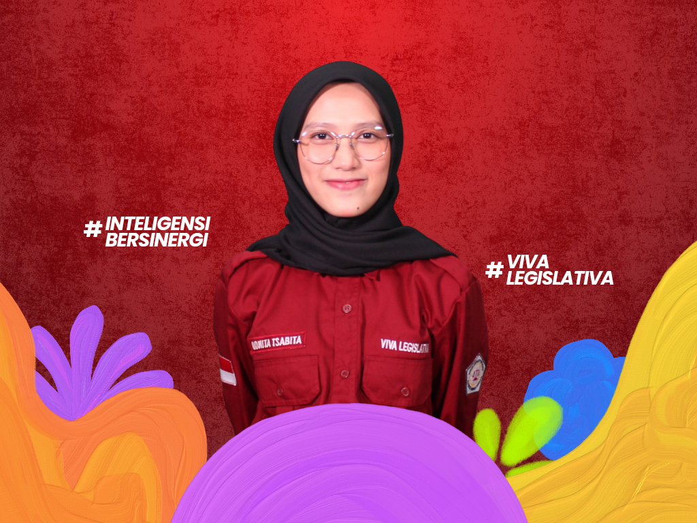
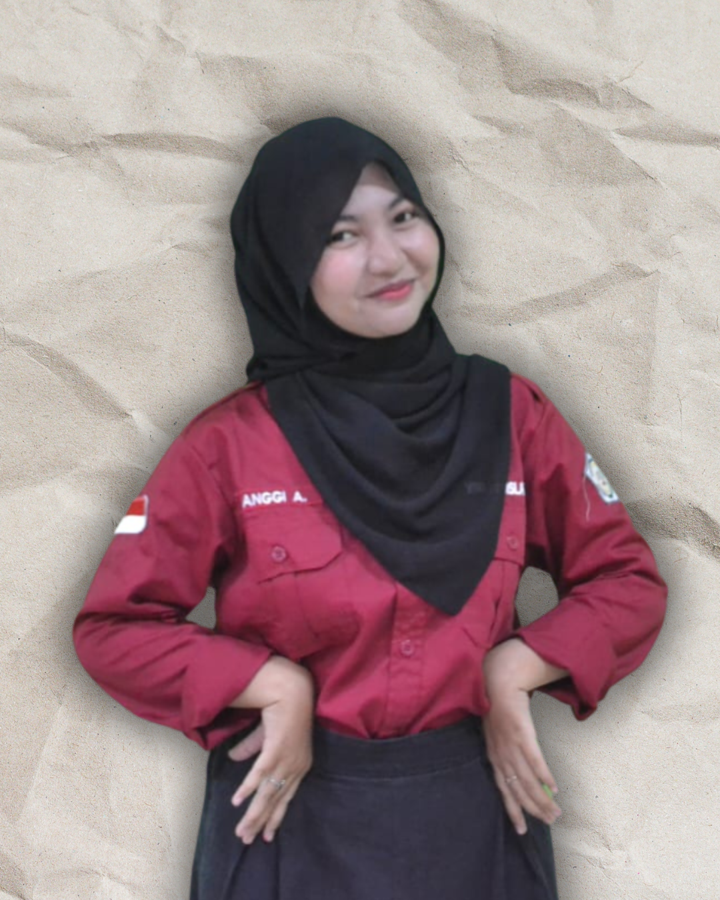
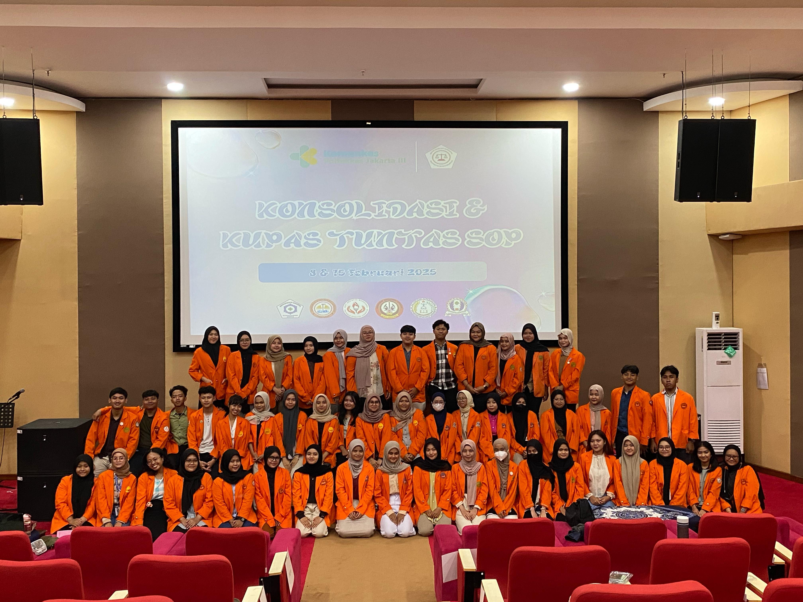
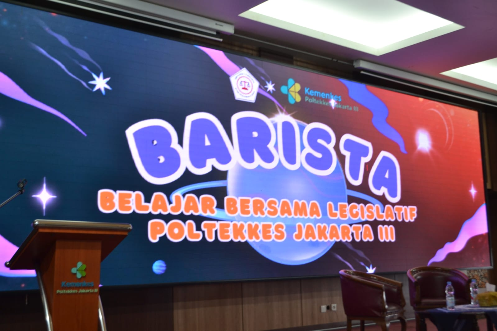
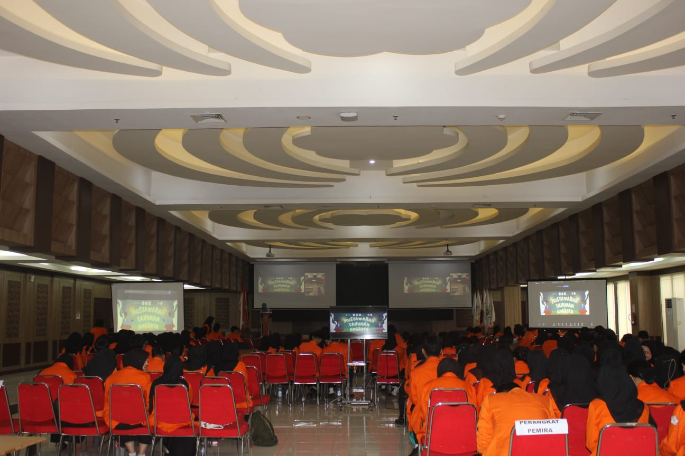

Komisi IV Legislasi
Perkenalkan kami dari Komisi IV Dewan Legislatif Mahasiswa Poltekkes Kemenkes Jakarta III Periode 2025. Yuk kenal kami lebih lanjut!

Fayza Nazma
Koordinator Komisi IV

Rizqy Bagas Drajat
Anggota Komisi IV

Putri Nadya
Anggota Komisi IV

Aniza Fadia
Anggota Komisi IV

Haemonia Muharama Aisyah
Anggota Komisi IV

Anggi Anastasya
Anggota Komisi IV
Tugas Pokok Komisi IV
-
Menyusun dan membentuk kebijakan berupa produk hukum yang dibahas bersama LKM Poltekkes Kemenkes Jakarta III untuk mendapatkan persetujuan bersama, serta mengkaji kebijakan yang diajukan oleh BEM, UKM, dan HMJ untuk menjadi ketetapan baru dalam LKM Poltekkes Kemenkes Jakarta III dengan mempertimbangkan urgensi perubahan dan keselarasan kajian yang diajukan.
-
Melakukan pengkajian kebijakan yang terdapat di dalam AD/ART dan GBHO Poltekkes Kemenkes Jakarta III.
-
Memberikan pemahaman terkait produk hukum kepada LKM Poltekkes Kemenkes Jakarta III.
Program Kerja Komisi IV
-
Konsolidasi dan Kupas tuntas SOP (KKT)
Melakukan pengesahan dan sosialisasi/pemaparan SOP.

-
Belajar Bersama Legislatif Jakarta III (BARISTA)
Melakukan pemberian materi Tata Cara Persidangan dan Pelatihan Sidang.

-
Musyawarah Tahunan Anggota (MTA)
Melaksanakan sidang pleno pembahasan LPJ BEM dan DLM, LPJ SPIK dan Pembubaran SPIK, LPJ KPR, LK KP, dan Pembubaran Pemira, Pengesahan dan sambutan presiden mahasiswa terpilih, Sambutan ketua umum DLM terpilih, serta pembahasan produk hukum.
